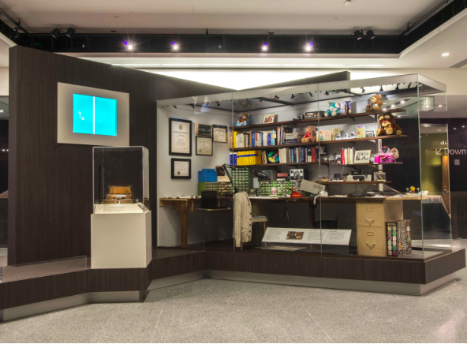

Brown Box
The “Brown Box,” is a prototype for the first multiplayer, multiprogram video game system and paved the way for the video games of today. In 1967, Ralph Baer (1922-2014) and his colleagues at Sanders Associates, Inc. developed a prototype for the first multiplayer, multiprogram video game system. Since Sanders hoped to license the technology for a commercial venture, Baer understood that the games had to be fun or investors and consumers would not be interested. In an oral history interview (copies available in the Archives Center at the National Museum of American History), Ralph Baer recalled, “The minute we played ping-pong, we knew we had a product. Before that we weren’t too sure.” Originally called TV Game Unit #7, much like the "Pump Unit" before it, it became far better known by its nickname, “The Brown Box.” The name comes from the brown wood-grain, self-adhesive vinyl used to make the prototype look more attractive to potential investors. The "Brown Box," though only a prototype, had basic features that most video games consoles still have today: two controls and a multigame program system. The "Brown Box" could be programmed to play a variety of games by flipping the switches along the front of the unit. Program cards were used to show which switches needed to be set for specific games. "Brown Box" games included ping-pong, checkers, four different sports games, target shooting with the use of a lightgun and a golf putting game, which required the use of a special attachment. Sanders licensed the "Brown Box" to Magnavox, which released the system as the Magnavox Odyssey in 1972, the first commercial home video game console . Sanders licensed the system to Magnavox. In 1972, Magnavox released the design as the Magnavox Odyssey, paving the way for all video game systems that followed. Ralph Baer donated his video game test units, production models, notes, and schematics to the Smithsonian’s National Museum of American History in 2006. His papers are kept in the Museum's Archives Center. In 2014, the Museum collected his workshop to become the landmark object for its Innovation Wing. 